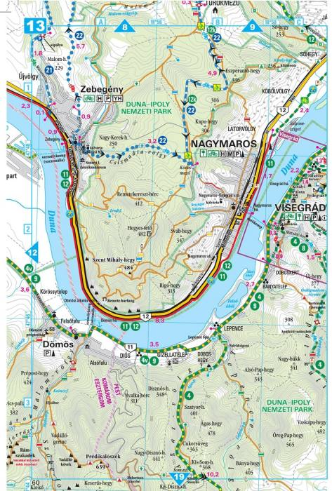
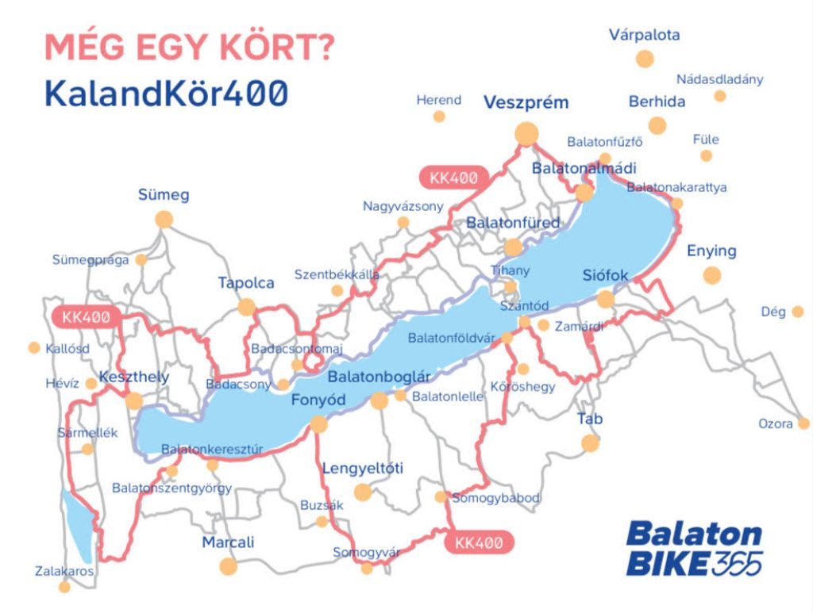
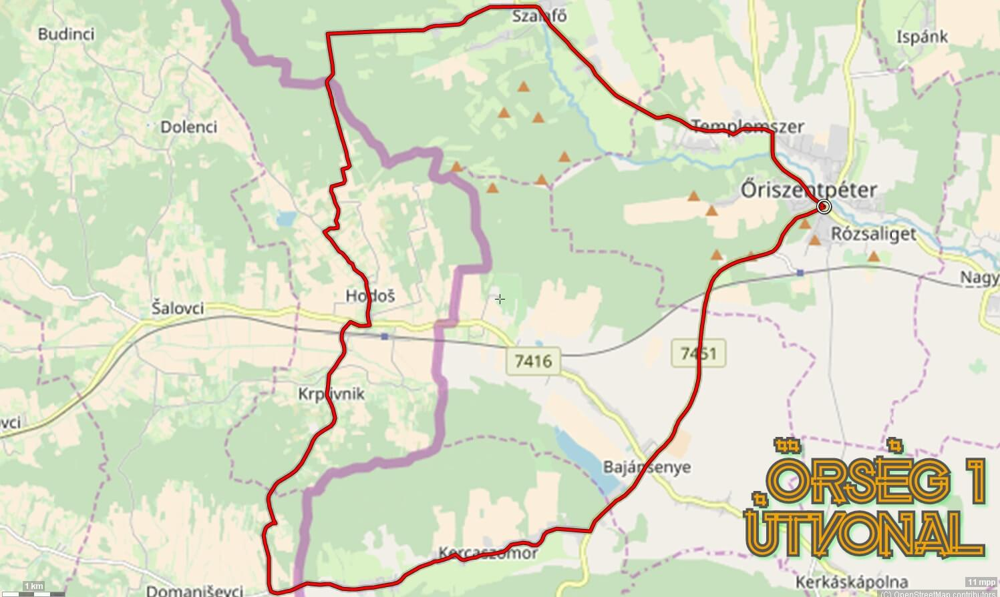

Túraútvonalak
Ha szeretsz bringázni természetben, dombokon vagy tóparton, ez a rész neked szól! Összegyűjtöttünk néhány népszerű hazai kerékpártúrát, amiket érdemes kipróbálni.
Dunakanyar kerékpártúra
A Budapesttől északra fekvő Dunakanyar az egyik legszebb hazai bringaút. A Visegrád és Esztergom közti szakasz változatos tájakkal, panorámával és kulturális látványosságokkal vár.
Balaton körüli kerékpárút
A "Balaton kör" egy igazi klasszikus: 210 km jól kiépített kerékpárút várja azokat, akik szeretnék körbetekerni Magyarország legnagyobb tavát. Nyáron különösen népszerű, de tavasszal és ősszel is kellemes.
Őrségi Nemzeti Park túra
Az Őrség dimbes-dombos vidéke ideális a természetkedvelő kerékpárosoknak. Csendes falvak, rétek, erdők és barátságos vendéglátók várnak ezen a kevésbé ismert, de annál bájosabb túrán.
Ha szereted a kihívásokat, próbáld ki a Zemplén vagy a Mátra kerékpáros útvonalait is. Ezek a régiók emelkedőikkel és vadregényes tájaikkal igazán különleges élményt nyújtanak.